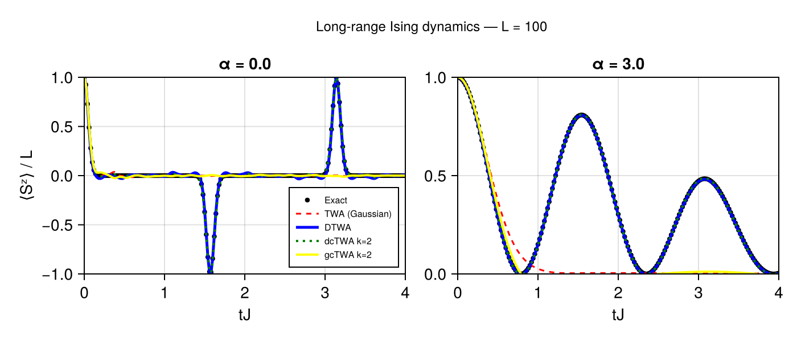

Long-range Ising Benchmark
This example compares four truncated-Wigner descriptions of a long-range Ising chain against an analytical result:
- traditional Gaussian TWA,
- discrete TWA (DTWA),
- Gaussian cluster TWA (gcTWA),
- discrete cluster TWA (dcTWA).
The example illustrates an important feature of the TWA.jl API: cluster size and phase-space sampling can be varied independently while the physical model and initial state remain unchanged.
Model
Consider a one-dimensional chain of $N$ spin-$1/2$ degrees of freedom with the Hamiltonian
\[H = \sum_{i<j} J_{ij}\, \sigma_i^x\sigma_j^x,\]
where the interactions decay as
\[J_{ij} = \frac{J}{r_{ij}^{\alpha}}.\]
Here $r_{ij}$ is the distance between sites $i$ and $j$.
In TWA.jl, the model is constructed as
using TWA
const L = 100
const J = 1.0
model = SpinModel(
Chain(L),
PowerLaw(
Ising(:x; J=J);
α=3.0,
),
)We consider two interaction exponents:
\[\alpha=0\]
for distance-independent all-to-all interactions, and
\[\alpha=3\]
for a dipolar power-law decay in one dimension.
Initial state
All spins are initially polarized along $+z$:
\[|\psi_0\rangle = |\uparrow_z\rangle^{\otimes N}.\]
In the package this is simply
state = Up()The observable of interest is the longitudinal magnetization density,
\[m_z(t) = \frac{1}{N} \sum_i \langle\sigma_i^z(t)\rangle = \frac{\langle S^z(t)\rangle}{N}.\]
Exact solution
This model provides a useful benchmark because all terms in the Hamiltonian commute:
\[[ \sigma_i^x\sigma_j^x, \sigma_k^x\sigma_l^x ] = 0.\]
For the fully $z$-polarized initial state, the local magnetization is
\[\langle\sigma_i^z(t)\rangle = \prod_{j\neq i} \cos\left(2J_{ij}t\right).\]
The exact magnetization density is therefore
\[m_z(t) = \frac{1}{N} \sum_i \prod_{j\neq i} \cos\left(2J_{ij}t\right).\]
This expression lets us compare the different phase-space approximations directly against the exact dynamics without performing exact many-body time evolution.
A simple implementation is
function exact_magnetization_z(model::SpinModel, ts)
nsites = geometry(model).nsites
values = zeros(Float64, length(ts))
for (time_index, t) in pairs(ts)
total = 0.0
for i in 1:nsites
local_magnetization = 1.0
for j in 1:nsites
i == j && continue
Jx, _, _ = coupling_components(
model,
i,
j,
)
local_magnetization *=
cos(2 * Jx * t)
end
total += local_magnetization
end
values[time_index] = total / nsites
end
return values
endThe analytical solution can be evaluated on a much finer time grid than the numerical simulations. This improves the appearance of the exact curve without increasing the number of saved ODE time points.
For example,
simulation_times =
collect(0.0:0.05:4.0)
exact_times =
collect(0.0:0.01:4.0)can be used independently.
Four phase-space approximations
The benchmark separates two approximation choices:
- whether the phase space describes individual spins or clusters;
- whether the initial state is sampled using a Gaussian or discrete representation.
This gives the following comparison:
| Sampling | Single-spin | Two-spin cluster |
|---|---|---|
| Gaussian | TWA | gcTWA |
| Discrete | DTWA | dcTWA |
Traditional TWA
For a single-spin phase space with Gaussian initial sampling, we use
twa = CTWA(
cluster_size=1,
trajectories=1000,
sampling=GaussianSampling(),
)At cluster size one, CTWA contains only the three single-spin coordinates $X$, $Y$, and $Z$. Its equations therefore reduce to the ordinary classical-spin equations.
DTWA
Discrete single-spin sampling is selected directly with
dtwa = DTWA(
trajectories=1000,
)The classical dynamics are closely related to the single-spin Gaussian case, but the initial quantum fluctuations are represented using the discrete spin phase space.
Gaussian CTWA
To introduce two-spin clusters while retaining Gaussian initial sampling, use
gctwa = CTWA(
cluster_size=2,
trajectories=1000,
sampling=GaussianSampling(),
)A two-spin cluster has
\[4^2-1=15\]
nontrivial Pauli-string phase-space coordinates.
Discrete CTWA
The corresponding discrete cluster calculation is
dctwa = CTWA(
cluster_size=2,
trajectories=1000,
sampling=DiscreteSampling(),
)The cluster dynamics are the same as in gcTWA. Only the representation of the initial quantum state has changed.
Running the simulations
A typical simulation uses
const TMAX = 4.0
const DT = 0.05
const NTRAJ = 1000
const OUTPUT_TIMES =
collect(0.0:DT:TMAX)For example, DTWA is run as
dtwa_result = simulate(
model,
state,
DTWA(
trajectories=NTRAJ,
);
tspan=(0.0, TMAX),
saveat=OUTPUT_TIMES,
)and the magnetization is extracted with
dtwa_mz = expectation(
dtwa_result,
Magnetization(:z),
)The dcTWA calculation changes only the approximation:
dctwa_result = simulate(
model,
state,
CTWA(
cluster_size=2,
trajectories=NTRAJ,
sampling=DiscreteSampling(),
);
tspan=(0.0, TMAX),
saveat=OUTPUT_TIMES,
)followed by the same observable call:
dctwa_mz = expectation(
dctwa_result,
Magnetization(:z),
)This is one of the main advantages of separating models, states, methods, and observables in the package API.
Results
The figure below compares the four phase-space approximations with the analytical result for $N=100$.
The left panel shows the all-to-all case $\alpha=0$, while the right panel shows the power-law case $\alpha=3$.

The comparison should be read in two complementary ways.
At fixed single-spin phase space,
TWA ↔ DTWAcompares Gaussian and discrete sampling.
At fixed two-spin cluster size,
gcTWA ↔ dcTWAcompares the same two sampling strategies in cluster phase space.
Conversely,
TWA ↔ gcTWA
DTWA ↔ dcTWAcompare single-spin and cluster descriptions while keeping the sampling family fixed.
This makes the benchmark useful for separating the effect of the initial phase-space representation from the effect of clustering.
Reproducibility
Because TWA, DTWA, gcTWA, and dcTWA are Monte Carlo methods, finite trajectory ensembles produce statistical fluctuations.
For reproducible comparisons, an explicit random-number generator can be supplied:
using Random
result = simulate(
model,
state,
DTWA(
trajectories=1000,
);
tspan=(0.0, 4.0),
saveat=0.05,
rng=Xoshiro(1234),
)Using a fixed seed is useful for examples, tests, and benchmarks.
For scientific calculations, convergence should still be checked by increasing the number of trajectories.
What should be converged?
There are two distinct convergence questions.
For every stochastic TWA calculation, increase the number of trajectories:
100 → 1000 → 10000to assess Monte Carlo sampling noise.
For CTWA, the cluster size provides an additional approximation parameter:
k = 1 → 2 → 4 → ...when compatible with the system size and computational resources.
The number of CTWA phase-space coordinates per cluster grows as
\[4^k-1,\]
so increasing the cluster size rapidly becomes more expensive.
Trajectory convergence and cluster-size convergence should therefore be examined separately.
Complete example
The complete script used to generate the figure is available in the repository as
examples/ising_twa_dtwa_dctwa_comparison.jlIt can be run from the package root with
julia --project=docs \
examples/ising_twa_dtwa_dctwa_comparison.jlThe generated figure is written to
docs/src/assets/ising_twa_dtwa_dctwa_comparison.pngRelated methods
For details of the underlying approximations, see
The methodological literature is collected in References and Citation.